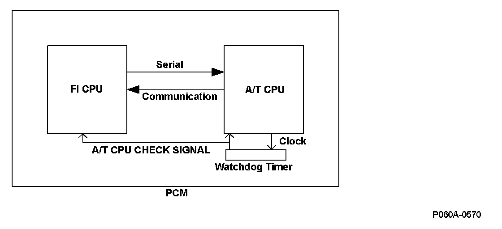
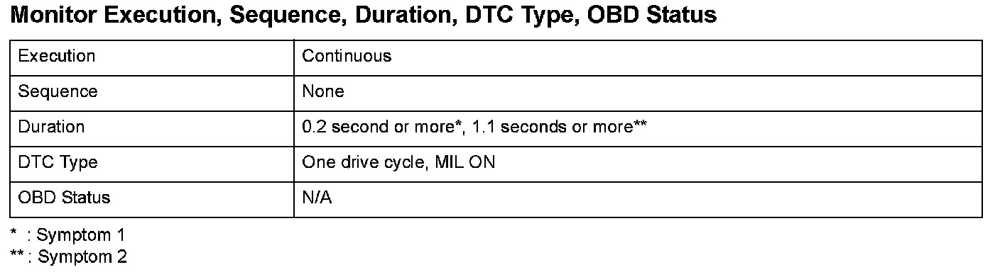
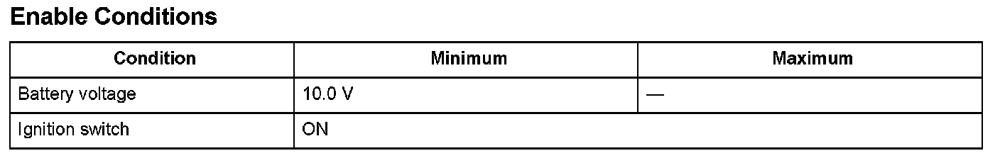

Advanced Diagnostics
DTC P060A: Powertrain Control Module (PCM) (A/T System) Internal Control Module Malfunction
General Description
When a malfunction occurs in the serial communication between the FI CPU and the A/T CPU in the powertrain control module (PCM) and the serial communication is interrupted for a set time or more, or when the watchdog timer that monitors the A/T CPU detects an abnormality in the A/T CPU and notifies the FI CPU via the A/T CPU check signal line, the PCM detects a malfunction and a DTC is stored.

Monitor Execution, Sequence, Duration, DTC Type, OBD Status

Enable Conditions
Malfunction Threshold
One of these symptom occurs.
- Symptom 1
The serial communication between the FI CPU and A/T CPU is abnormal or the serial communication is interrupted for at least 0.2 second.
- Symptom 2
The watchdog timer that monitors the A/T CPU detects an abnormality, and the FI CPU receives the A/T CPU check signal for at least 1.1 seconds.
Diagnosis Details
Conditions for illuminating the MIL
When a malfunction is detected, the MIL comes on and the DTC and the freeze frame data are stored in the PCM memory.
Conditions for clearing the MIL
The MIL will be cleared if the malfunction does not recur during three consecutive trips in which the diagnostic runs.
The MIL, the DTC, and the freeze frame data can be cleared by using the scan tool Clear command or by disconnecting the battery.